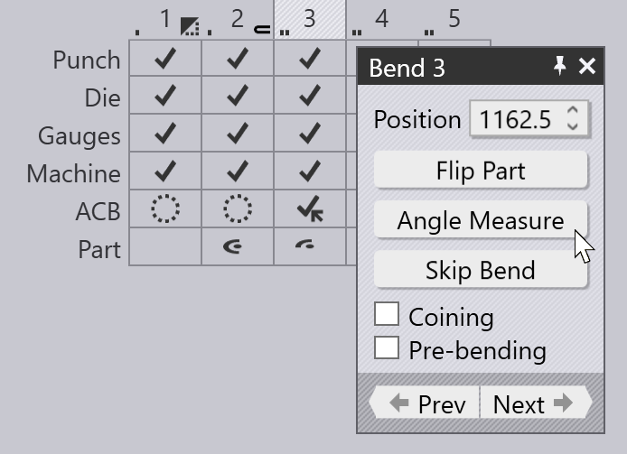
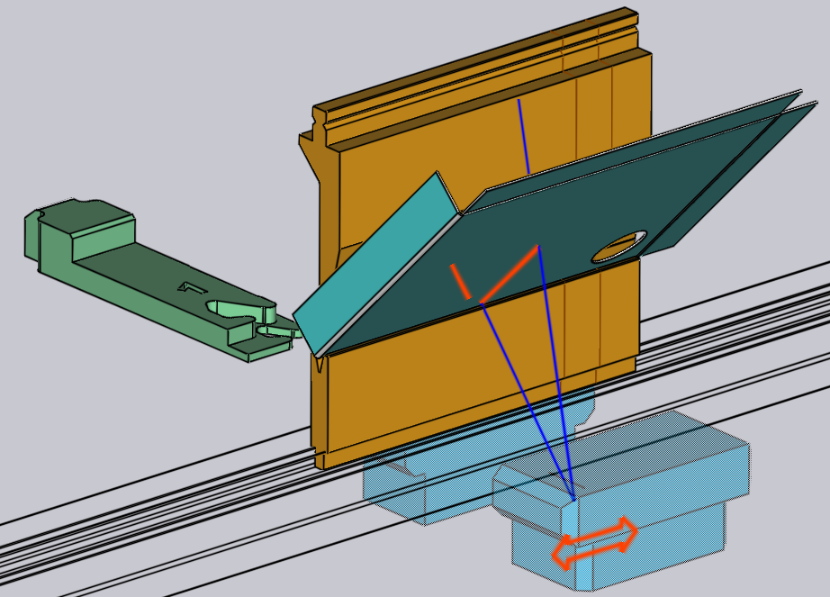

Edit Angle Measurement
Angle measurement systems like ACB™, ACBLaser™, or LCB™ can be used to improve the angle accuracy during bending. These systems measure the actual angle achieved during bending and the spring-back of the sheet metal and use this information to adjust the beam bottom-dead-center point dynamically to achieve the target bending angle.
Disk and Laser systems
Angle measurement systems are based on sensor disks mounted in the punches, or on optical systems using a laser beam projected on the workpiece. {appName} supports both, and when you configure a machine there are some option switches that you can turn on, depending on the machine options you have installed.
The image above shows a settings panel for Trumpf 5085 B23 machine. This machine supports two types of disk-based angle measurement (ACB-Classic and ACB-Wireless) as well as the laser based measurement (ACB-Laser). This particular machine is configured with all three options on.
If a press-brake has both systems of angle measurement, you may further want to prioritize one over the other, or you may want to turn off angle measurement for a particular part. You can do that using the Settings panel.[1]
The Angle measurement section of the Settings/BendCAM page has a choices list that lets you turn on or off the various angle measurement systems. You can prioritize one over the other by selecting it and moving it up or down using the up/down arrow buttons alongside. In this particular example, both disk and laser based angle-measurement are enabled, and we prioritize laser first.[2]
The Use ACB Speed option determines, if the ACB Speed flag will be set by default in the ACB Panel. This option is enabled by default for all Touchpoint machines.
ACB Methods
There are different ACB Methods that are usable in {appName}. Most of these are common between disk based and laser based angle measurement, so we discuss the different methods first.
Identify
The Identify or Identification or Identify Springback method is the canonical use of the ACB system. The press-brake uses the angle-measurement system to measure the actual angle being formed when the part is bent. After the part is fully bent, the machine goes to the decompression state to allow the metal to spring back. The spring back is also measured using ACB, and is compensated for by a precise over-bending. To avoid the possibility of overshooting the target angle during measurement, the machine aims for a slight underbending at first, and then does a subsequent re-bending to reach the target. This is the most accurate, but also the most time-consuming ACB method.
Learn Y
In the Learn Y method, the ACB system is not used at all. The beam Y target (bottom dead center) is simply copied from an earlier bend (known as a reference bend) that has already been measured using the Identify method. This earlier bend must be identical in terms of angle, radius and tool usage.
Learn SB
In the Learn SB or Learn Springback method, the ACB system uses the spring-back angle from a previous bend that has been measured using the Identify method. The ACB system is still used to regulate the bending, but since a second measurement after decompression is not required, the cycle is faster than a full Identify cycle.
Enter SB
The Enter SB, or Enter Springback or Corrected or ACB Smart method uses the ACB system to measure the target angle, but uses a spring-back value that is entered by the user. In other words, the ACB will simply bend the part to the target angle + the user-entered correction value. No second measurement is taken after decompression.
Symbols for ACB
{appName} uses several icons for representing various ACB methods or ACB errors and warnings. Here are the icons used to display various ACB systems and modes in the bend navigator:
Icon |
Meaning |
|
Disk system, Identify method |
|
Disk system, Learn Y method |
|
Disk system, Enter SB method |
|
Laser system, Identify method |
|
Laser system, Learn Y method |
|
Laser system, Enter SB method |
Here are the icons used to display warnings and errors:
Icon |
Meaning |
|
Flange too narrow for sensor disk |
|
Sensor disk too close to edge of part |
|
Sensor disk falls into hole (risk of breakage) |
|
Invalid reference bend (cannot learn from this bend) |
|
Laser trace length less than ideal (warning) |
|
Only one laser (front or rear) used for measurement |
|
Laser trace length too low to measure (error) |
These icons, along with other information about the ACB systems and methods being used, are all displayed on the ACB row of the navigator:
Notes about Angle Measurement
Laser System Names
The laser based angle measurement system is known by different names like ACB-Laser or LCB. These are all programmed identically in {appName}, though the actual hardware and machine implementation differ. Most of the {appName} user interface just uses the word ACB or ACB-Laser, so we will use this term in this discussion as well.
Auto-tooler behavior
The {appName} auto-tooler assigns ACB laser methods to each bend in an optimum manner. Initially, it starts with using the Identify method for the first bend, and then tries to use the Learn Y method for successive bends where possible. If there is already a bend with the same angle, radius, tool-set and with a similar grain orientation, {appName} will use the Learn Y method, rather than doing another Identification.
Some bends may be skipped automatically because:
-
The bending angle is not within the measurement range of the sensor (too acute / too obtuse).
-
This is not an air-bending (for example, coining, Z-bending, hem or fold)
-
This is a pre-bend for another bend (does not need a precise angle)
The image above shows a part where some bends have no ACB method - these are indicated with the hollow circle icons in the ACB row, and the tool-tip for each cell indicates a reason why no ACB measurement is performed.
Getting a valid measurement
When an ACB measurement is performed, {appName} will decide whether one, two or three measurements are required based on the length of the bend line. The actual measurement positions are computed automatically, but can also be modified using the ACB Panel (discussed below). Typically, {appName} will move both the ACB sensors ganged, and will use both front and rear sensors for an ACB measurement, but this can also be edited.
{appName} can evaluate the laser trace length for an ACB measurement. This is the length of the projected laser line that is visible to the camera. Parts of the line may be obstructed by the die, or by the gauges. Some parts may go over holes in the sheet, or over formings. The evaluation takes all these into account and can compute the actual length of line available to the optical system. {appName} compares this available length against a machine-defined minimum and ideal length, and raises an appropriate error or warning (as shown in the {appName} Symbols section above).
{appName} has some intelligence to move the measurement position to the left or right to avoid holes, formings or other factors that can limit the trace length. In addition, {appName} will also automatically add a retraction to the gauges if they come in the way of a laser measurement. In addition, the laser trace length evaluation is done continuously, so if you move the ACB sensor positions or adjust the gauges, you can see the results immediately in the navigator.
Interactive editing
You can open the ACB Panel, where the ACB settings are edited in one of these ways:
-
Click twice on a bend number in the navigator to open the bend panel, and then click on the Angle Measure button (this is displayed only if the machine has some angle-measurement system configured).
 -
Click on any of the cells in the ACB row of the navigator.
-
Click on one of the ACB sensors, if they are in view (see image below).
During the simulation, the ACB sensors are displayed as they come into the measurement
position and image the part. The actual laser lines as imaged by the camera are projected
on the part (in orange). These lines are also displayed and updated in real-time as you
interactively edit the sensor positions. During interactive editing, moving the mouse over the
front or rear sensor displays some annotations like this:

The orange traces on the sheet indicate the actual trace lengths available. You can click one the sensor and drag it, and the lines are updated immediately (taking into account holes, formings, shadowing by the dies or gauges). The blue lines indicate the upper and lower limits of the laser sweep (these are displayed only as long as the mouse is over one of the front or rear sensors).
ACB panel
The image alongside shows a typical display from the ACB Panel.
-
The System selector lets you switch between Laser and Disk measurement systems, and is displayed only if the machine has both systems installed.
-
The Mode is one of the identification modes discussed in the section above, on ACB Methods.
-
The Lasers list lets you choose if both the lasers are used for the measurement (the default). In some cases, you can decide to use only the front or the rear lasers. The option Both (Skew) in this list is used when you want to use both the lasers, but need to position the front and rear lasers separately (see image below).
-
The Position input sets the Z position for laser measurement (in machine coordinates). As you change this, you can see the ACB sensor move, the laser trace getting recomputed and possibly some warnings and errors related to trace length appear/disappear in the navigator, all in real-time.
-
The Trace display shows the laser trace available for measurement. In general, the front and rear traces may vary in length; this displays the minimum.
-
The ACB Speed method speeds up production of several parts in succession, as it only measures the spring-back once on the first part and reuses the same value for all subsequent parts. ACB Speed can be activated or deactivated separately for each bend.
The panel above shows only one measurement (the bend line length was too short to permit multiple measurements). If the bend line length is longer, {appName} will use more measurements. You may then see a display like the one alongside:
-
In this example, we have set the Lasers setting to Both (Skew), and so the Position input is split to display separate Front and Rear positions.
-
The Measures input displays the number of measurements to take; this is set to the optimum value computed by {appName} (based on the bend length). In this example, {appName} has opted to do 3 measurements, but you can decrease this all the way down to 1.
-
The Index slider is used to select one of the 3 measurements to edit. As you move this slider, the corresponding position is displayed in the Front and Rear input boxes, and can be edited. The simulation also moves the sensor to the corresponding measurement position.